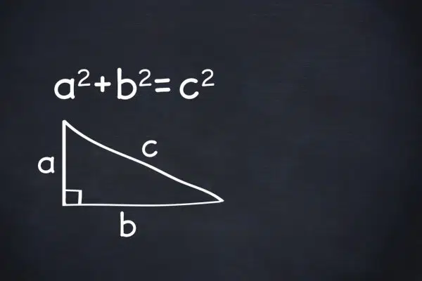
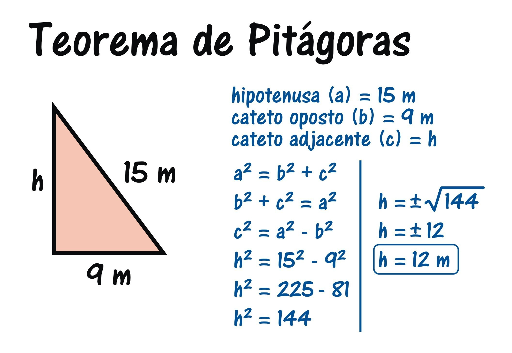

Tópicos abordados
Entendendo os Cónceitos
Teorema de Pitágoras
Quando se fala em trigonometria ou geometria, um dos primeiros tópicos que surge é o Teorema de Pitágoras. Isso porque a expressão é uma das mais importantes e conhecidas da Matemática. Ou seja, o teorema é utilizado para resolver cálculos na geometria analítica, na geometria espacial, plana e na trigonometria.
A utilização do teorema começou quando, Pitágoras de Samos (570 a.C. – 495 a.C.) – matemático e filósofo grego -, iniciou os projetos da Escola Pitagórica. Na escola, Pitágoras ensinava conceitos sobre Matemática, Música e Astronomia. Por conta disso, a escola era também chamada de Sociedade Pitagórica. O teorema possui o nome de Pitágoras devido à primeira demonstração da expressão matemática ter sido feito pelos estudantes da Escola Pitagórica. Assim, quando o teorema foi descoberto, a Matemática da época sofreu várias mudanças. Além disso, impulsionou os estudos para avanços até os dias atuais.
A Fórmula
O Teorema de Pitágoras estabelece que: o quadrado da hipotenusa é equivalente à soma dos quadrados dos catetos. Dessa forma, temos: \(a² = b² + c² \)
Área de um Círculo
A área do círculo corresponde ao valor da superfície dessa figura, levando em conta a medida de seu raio (r).Vale lembrar que o círculo, também chamado de disco, é uma figura geométrica que faz parte dos estudos da geometria plana.
A Fórmula
Para calcular a área do círculo devemos utilizar a seguinte fórmula: \(A = \pi.r²\)
Onde:
Equação do Segundo Grau
A equação do segundo grau recebe esse nome porque é uma equação polinomial cujo termo de maior grau está elevado ao quadrado. Também chamada de equação quadrática, é representada por:
\(ax²+bx+c=0\)
Numa equação do 2º grau, o \(x\) é a incógnita e representa um valor desconhecido. Já as letras a,b e c são chamadas coeficientes da equação.
Os coeficientes são números reais e o coeficiente a tem que ser diferente de zero, pois do contrário passa a ser uma equação do 1º grau.
\(ax²+bx+c=0\)
Resolver uma equação de segundo grau, significa determinar os valores reais de \(x\), que tornam a equação verdadeira. Esses valores são denominados raízes da equação.
Uma equação do segundo grau possui no máximo duas raízes reais.